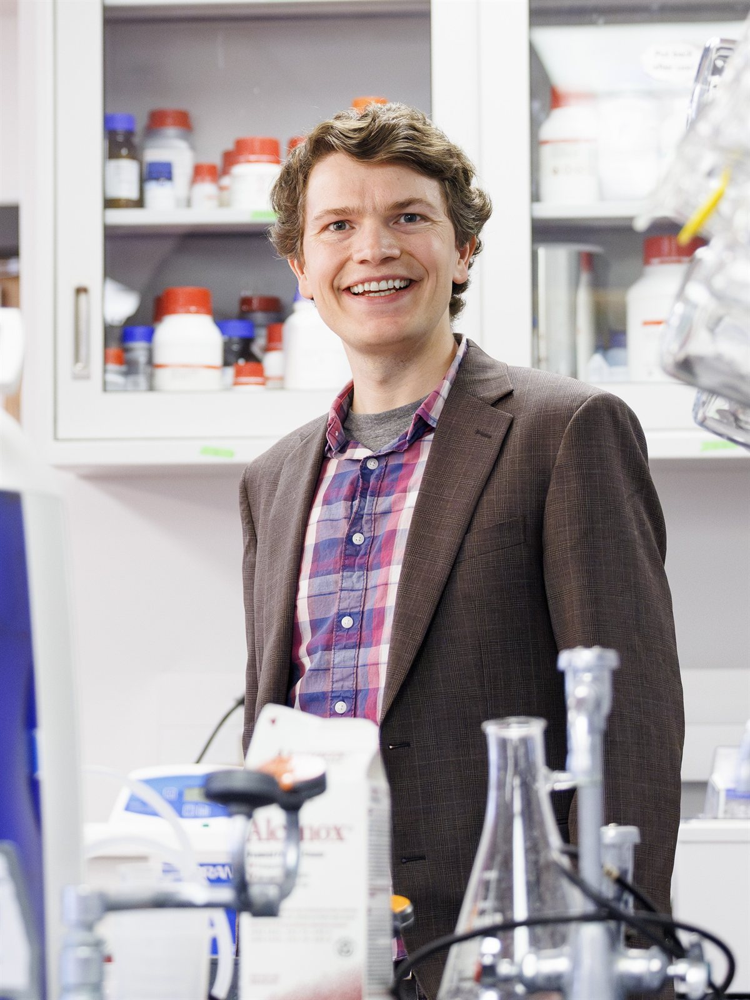

Technical Resources
A Practical Guide to Solid Phase Peptide Synthesis
Start with the fundamentals, with practical tips to avoid common obstacles in SPPS.
Read the guideThe CSBio resource library
Practical knowledge. New developments. Personal perspectives.
Find the resources that move your research and career forward.
Find your focus
Three ways to keep learning.
Build your knowledge
Practical guides, synthesis methods, and tools to help you choose equipment and improve your peptide synthesis.
SPPS guides · Equipment selection · Heating & scale-up
Explore technical resourcesStay up to date
Quarterly updates on peptide research and drug development, plus news from across the peptide community.
Quarterly updates · Research & industry news
Browse peptide newsLearn from the people
Career advice from leading peptide researchers: how they got into peptide science, what they learned, and their advice for the next generation.
Researcher profiles · Career paths · Mentorship
Meet the researchersA place to start
Technical Resources
Start with the fundamentals, with practical tips to avoid common obstacles in SPPS.
Read the guidePeptide News
Explore the quarter’s developments in peptide therapeutics, research, and drug development.
Read the updatePeptide Career Stories
On finding a path into chemical biology, exploring peptide signaling, and mentoring independent researchers.
Read the interview
Leading Peptide Researchers
Discover how leading researchers found their way into peptide science. Our interview series explores the decisions, mentors, and lessons that shaped their careers—and their advice for scientists finding their own path.
Explore Peptide Career Stories